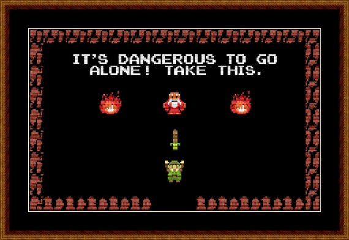

Linguistics 111: Phonology
Dr. Will Styler - Winter 2018
Today’s Plan
Introductions
Syllabus and Canvas
What is phonology?
What are the learning goals?
How will we accomplish them?
Introductions
Dr. Will Styler
Instructor, Linguist, Gigantic Nerd

Kati Hout
TA, Linguist

Michael Obiri-Yeboah
TA, Linguist

Who are you?
What’s your year?
Ling majors?
Monolingual/Bilingual/Multilingual?
What languages do we speak?
Syllabus and Schedule
Syllabus Stuff which bears repeating

Office Hours Schedule
- FIXME
Syllabus Stuff which bears repeating
Check your email/Canvas
Come to office hours.
The syllabus will change a lot!
We are here to help!
Canvas
We’re moving to Canvas!
This will replace TritonEd within a few years
This is a pilot program
Let’s take a look!
What is this course about?
Phonology
The study of how sounds pattern in Language and languages
Within-Language Phonological Questions
What sounds differentiate words? (Phonemic Analysis)
- … and what do speakers hear as being “the same sound”?
How do speakers tend to group sounds together? (Natural Classes)
How do sounds change when combined together? (Phonological Alternations)
What combinations are “legal” in the language? (Phonotactics)
How are syllables formed and what kinds of syllables does the language prefer? (Syllable Structure)
How do we assign stress, pitch, and emphasis? (Metrical Phonology)
Phonological Theory Questions
What patterns of sound patterns are more and less common around the world?
How should we model the sound patterns we see in language?
Are we using rules that transform ‘underlying’ sounds into one another?
Are we choosing a form among many which does the fewest things we don’t like?
Are we just remembering the words we’ve heard said before, and doing the rest from analogy?
How do these various approaches handle real data from real languages?
Do they predict all the things that really happen?
Do they predict crazy things that never happen?
How do they account for exceptions and other weird data?
Phonological Theory, Continued
How are words represented in our minds? As Phonemes? Phones? Words?
What information plays a role in our phonological decision making?
How do we actually make these decisions?
Can we model phonological decisions using computers or other algorithms?
Do these theories describe what’s happening inside the human mind?
- Or are they just a tool for describing language?
Phonology is not the same thing as phonetics
Phoneticians are more concerned with the physical processes of speech
Articulation, Perception, and the cognitive processes underlying both
Phonologists are more concerned with the patterns of sound structure in different languages
Markedness, phonotactics, rules, and cross-linguistic patterns
We’ll talk about the intersection later in the quarter
Phonology is a fascinating theoretical field
Several long theoretical traditions, which we’ll touch on
Vigorous debate about best practices
- Not a clear “right answer”
Vigorous debate about the cognitive realities
Vigorous debate about the exact nature of the field
We’re going to touch on theoretical questions throughout the quarter
Phonology is absolutely crucial to getting linguistic work done
Phonetics offers you a series of ordered phones
Phones are well and good, but they’re hugely variable

You need to account for this variability
- … or else your life is going to be awful
That’s what we’re going to do here
This course is about solving phonological problems
In 10 weeks, you will look at a phonological problem and…
Know that it’s a phonological problem
- Identify what’s changing or unexpected
Understand how to start looking at and characterizing it
Use tools from this class to break it down
Describe the pattern, and form a coherent analysis
Describe the pattern, and form a graceful analysis
… and failing that…
You’ll now that you’ve still got a problem
- … and that you’ll need to go deeper still
We’ll give you theoretical tools that will help
- 
… and we’ll talk about the strengths and weaknesses of these tools
As well as some alternative approaches
Because that’s a LOT of fun
There are two main goals
1) Give you enough phonological knowledge to move past many phonological problems
2) Show you why phonology is an interesting and worthwhile field to spend your life in
How are we going to accomplish these goals?

Two ways of applying data to your brain
In-class problem-sets
Homework assignments
In-class problem sets
Designed to give you a chance to work with actual data
We’ll be here to help
You’ll also get to help your classmates
- This a part of the learning process
Pick a group you want to work with
- Feel free to float around.
Homework problem sets
These let you work on problems on your own
These give us a chance to evaluate your work
You can discuss these with your classmates
- But you need to write up your own work, and mention who you’ve collaborated with
We’ll also have in-class discussions, and readings
Those will help too
Check the syllabus and watch the lectures for new reading announcements
The data are the learning
- So, don’t be surprised if we’re spending a lot of time there.
One thing I’d like to address…
“Group work!? Noooooo!!!!!”
Why do group work?
Wider range of information
Groups stimulate creativity and alternate solutions
Discussing topics helps cement learning
It helps you be involved in decision-making
You’re gonna do group work for the rest of your life
What’re the downsides?
Conformity pressure
Differing skill and preparation levels
It takes more time!
Differences among group members is a feature not a bug
Students who are ahead of the game get to teach
Students who in the middle get to mix things up
Students who are struggling get to learn
Always propose alternatives
How are we going to work this?
Groups are done by seating
- … but we’ll mix it up from time to time
We’ll always be wandering
- Sometimes providing feedback to small groups, sometimes cutting in to talk to all
Groups will have a spokesperson
- You’re welcome to change that around a bit
You’ll turn in your group information at the end of class
We’re trying new things here
LIGN 111 hasn’t been taught quite like this
Mistakes will be made, optimizations will be made
The schedule will change (except due dates)
DO NOT PRINT THE SYLLABUS
This quarter…
We’ll offer you tools to address phonological problems
We’ll give you a chance to use them
We’ll discuss why the tools look like they do
… but most of all …
We’ll show you that Phonology’s a Phon place to spend your time!

For Next Time
Come to class ready to phonologize!
We’ll start thinking about why we tackle these problems in the ways that we do